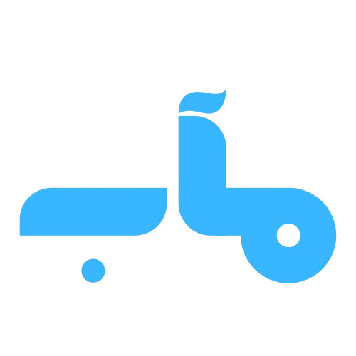

تثبيت التطبيق
أنت متصل حالياً دون إنترنت
...جاري تحميل بيانات القرآن الكريم

استماع، تكرار، وتفسير
بحث في القرآن
ابحث
إعدادات التشغيل
السورة:
القارئ:
التفسير:
خاصية التكرار
من آية:
إلى آية:
التكرار:
الفاصل:
بدون انتظار
نصف مدة الآية
نفس مدة الآية
استماع وتفسير
تسميع
المصحف
وضع التسميع
اختر السورة من الإعدادات، ثم حدد نطاق الآيات التي تريد تسميعها.
من آية:
إلى آية:
ابدأ
عرض صفحات المصحف
رقم الصفحة:
اذهب